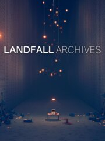

Landfall Archives
Landfall Archives
Detalles
|  | |
| Tiempo de juego | No Jugado |
| Última actividad | Nunca |
| Añadido | 24/04/2023 17:08:12 |
| Modificado | 24/04/2023 17:15:43 |
| Estado de finalización | Not Played |
| Librería | Steam |
| Fuente | Steam |
| Plataforma | PC (Windows) |
| Fecha de lanzamiento | 31/03/2023 |
| Puntuación de la Comunidad | 90 |
| Puntuación de la Crítica | |
| Puntuación de usuario | |
| Género | Action Adventure Casual Free to Play Indie Simulation Strategy |
| Desarrollador | Landfall |
| Editor | Landfall |
| Característica | Multi-Player Online Pvp Pvp Remote Play Together Shared/Split Screen Shared/Split Screen Pvp Single Player |
| Enlaces | Punto de encuentro Discusiones Guías Noticias Página de la tienda PCGamingWiki |
| Tag | |
Descripción
Break into the Landfall Archives and steal previously unreleased games, demos, interactive slide shows, and even an old version of TABS!
Landfall Archives is a collection of every project Landfall and friends have worked on since 2016 that didn't make it to the shelves but which all deserve to see the light of day.
Anything for my pals (2021)
Control a herd of Pals to help you navigate through a short level with obstacles.
Robots Forever (2018)
Find weapons to fight modular robots! Every robot part has its own health and can be destroyed separately so you better watch out…
Robots Forever 2 (2019)
This game builds on the concept of modular robots from the first Robots Forever. Included are more robots with varying sizes and parts, as well as randomly spawning weapons with upgrades.
Post Game (2019)
Small building game where you build conveyor belts and other parts to move packages around a facility. The more packages you get into the containers, the more credits you collect!
Physics Survival (2019)
A physics animated top-down game where you explore and interact with the environment and animals to gather resources that you can use to get more equipment and units.
TABS 2017 (2017)
TABS 2017 is an early version of Totally Accurate Battle Simulator using the 2.0 physics system that was scrapped in 2017 in favor of the current 3.0 version. In the game you use a variety of different units to beat a level or you can play around in the sandbox mode.
Airships 1 (2018)
An exploration of airship building, using a system with different modular parts you can use to build your ship. Fly the ship around the landscape to explore! We imagined this to be a way to travel around in some of the other prototypes.
Airships 2 (2018)
Another version of airship building with different modular parts and improved stabilization for the airships, aiding in flying and construction.
Wrecktangels (2019) Local PVP
Simple side-view battle game where you jump and shoot each other while using a time-slow mechanic. The world is built out of objects that collapse and break apart as they are hit, to keep you on your toes!
RTS card game (2021)
Play cards to spawn units, and cast spells during real-time strategy gameplay. Build your own deck and combine cards to change which units and abilities are part of your deck. We made this to explore real-time card mechanics with some light RTS gameplay.
Physics Fighter (2021)
Brawl with enemies in small rooms, using your fist, legs, and a knife. The enemies have different attacks and patterns that they follow during fights to keep you on your toes.
Medieval America (2020) Online PVP
Physics shooter where you battle your enemy on a destructible level that collapses as the battle goes on, be careful not to fall!
Plant Plane (2019)
Go on a peaceful journey along the level in a plane, creating bushes and leaving nature around you as you fly past.
Ocean Plane (2023)
Fly around and fire small missiles at airships and towers, in and around an ocean.
Playful (2021) Online PVP
A 1v1 game where you can battle and play in different scenarios with your own rules and goals. It was made to be a sandbox to create your own small games in.
Blob Game (2018)
A small experience of being locked in a room with an unknown creature while a voice speaks to you. There are a few different endings to this game, can you find them all?
Walking House Game (2021)
Prototype for a building game where you control and build a walking castle. Travel to explore and gather resources around you to build and upgrade your base. Beware of the enemies lurking nearby!
Missile Game (2021)
Control missiles and fly them through different levels with varying obstacles to bring down physics towers, with the goal of destroying the small objects you find in the structures.
Creepy Robots (2017)
Run and climb around a small town scene while being chased by humanoid robots!
ROUNDS 3D (2022) Online PVP
Prototype for a 3-dimensional version of the game ROUNDS. It’s mainly explored with the shooting mechanics and a handful of upgrades.
Counts and Stakes (2020) Online PVP
A vampires vs vampire hunters-themed top-down-shooter focusing on precise aiming. Play against other players in small arenas with physics obstacles that you can interact with.
Physics Presentation (2018)
Not exactly a game, but more of an interactive slideshow made to be used as a presentation explaining the principles of the physics used in Landfalls games.
Auction Brawl (2017) 2-4 Local Splitscreen
Split screen fighting game where you bid on items that you then use to brawl against the other bidders. You can also grab and use most other items in the auction room to fight your fellow players!
Landfall Archives is a collection of every project Landfall and friends have worked on since 2016 that didn't make it to the shelves but which all deserve to see the light of day.
This collection of 23 projects includes:
Anything for my pals (2021)
Control a herd of Pals to help you navigate through a short level with obstacles.
Robots Forever (2018)
Find weapons to fight modular robots! Every robot part has its own health and can be destroyed separately so you better watch out…
Robots Forever 2 (2019)
This game builds on the concept of modular robots from the first Robots Forever. Included are more robots with varying sizes and parts, as well as randomly spawning weapons with upgrades.
Post Game (2019)
Small building game where you build conveyor belts and other parts to move packages around a facility. The more packages you get into the containers, the more credits you collect!
Physics Survival (2019)
A physics animated top-down game where you explore and interact with the environment and animals to gather resources that you can use to get more equipment and units.
TABS 2017 (2017)
TABS 2017 is an early version of Totally Accurate Battle Simulator using the 2.0 physics system that was scrapped in 2017 in favor of the current 3.0 version. In the game you use a variety of different units to beat a level or you can play around in the sandbox mode.
Airships 1 (2018)
An exploration of airship building, using a system with different modular parts you can use to build your ship. Fly the ship around the landscape to explore! We imagined this to be a way to travel around in some of the other prototypes.
Airships 2 (2018)
Another version of airship building with different modular parts and improved stabilization for the airships, aiding in flying and construction.
Wrecktangels (2019) Local PVP
Simple side-view battle game where you jump and shoot each other while using a time-slow mechanic. The world is built out of objects that collapse and break apart as they are hit, to keep you on your toes!
RTS card game (2021)
Play cards to spawn units, and cast spells during real-time strategy gameplay. Build your own deck and combine cards to change which units and abilities are part of your deck. We made this to explore real-time card mechanics with some light RTS gameplay.
Physics Fighter (2021)
Brawl with enemies in small rooms, using your fist, legs, and a knife. The enemies have different attacks and patterns that they follow during fights to keep you on your toes.
Medieval America (2020) Online PVP
Physics shooter where you battle your enemy on a destructible level that collapses as the battle goes on, be careful not to fall!
Plant Plane (2019)
Go on a peaceful journey along the level in a plane, creating bushes and leaving nature around you as you fly past.
Ocean Plane (2023)
Fly around and fire small missiles at airships and towers, in and around an ocean.
Playful (2021) Online PVP
A 1v1 game where you can battle and play in different scenarios with your own rules and goals. It was made to be a sandbox to create your own small games in.
Blob Game (2018)
A small experience of being locked in a room with an unknown creature while a voice speaks to you. There are a few different endings to this game, can you find them all?
Walking House Game (2021)
Prototype for a building game where you control and build a walking castle. Travel to explore and gather resources around you to build and upgrade your base. Beware of the enemies lurking nearby!
Missile Game (2021)
Control missiles and fly them through different levels with varying obstacles to bring down physics towers, with the goal of destroying the small objects you find in the structures.
Creepy Robots (2017)
Run and climb around a small town scene while being chased by humanoid robots!
ROUNDS 3D (2022) Online PVP
Prototype for a 3-dimensional version of the game ROUNDS. It’s mainly explored with the shooting mechanics and a handful of upgrades.
Counts and Stakes (2020) Online PVP
A vampires vs vampire hunters-themed top-down-shooter focusing on precise aiming. Play against other players in small arenas with physics obstacles that you can interact with.
Physics Presentation (2018)
Not exactly a game, but more of an interactive slideshow made to be used as a presentation explaining the principles of the physics used in Landfalls games.
Auction Brawl (2017) 2-4 Local Splitscreen
Split screen fighting game where you bid on items that you then use to brawl against the other bidders. You can also grab and use most other items in the auction room to fight your fellow players!